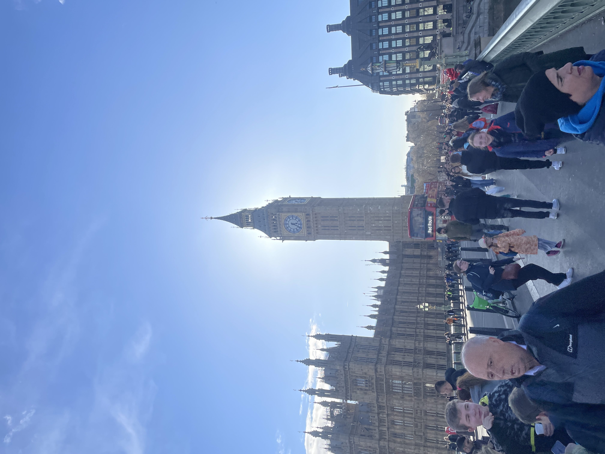
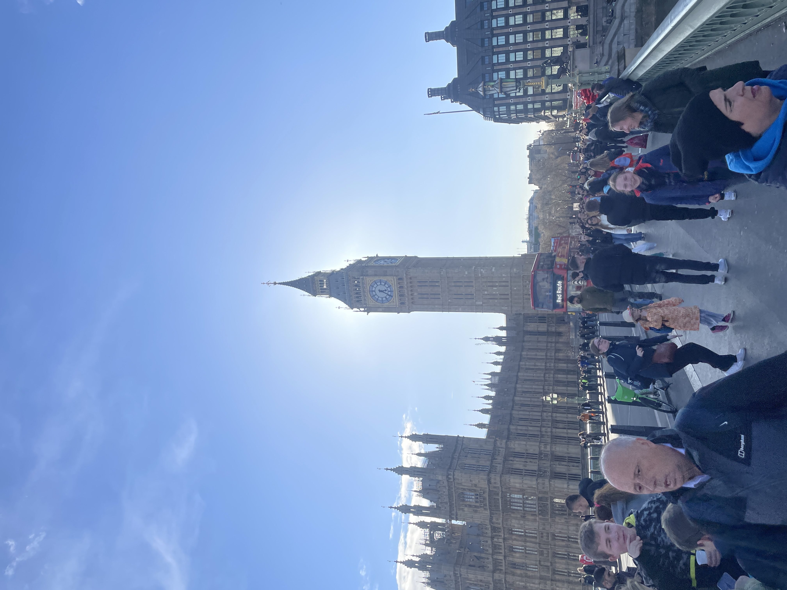

Outdoors, Camping, & Overlanding
(a.k.a my happy place)
Living in a modern age surrounded by pixels and concrete tends to make one forget what true silence sounds like, what true darkness looks like, and these are the things I try not to forget. I love camping, and generally being in nature, because it reminds me of where I really live and serves as an environment to spend better quality time with those I care about.
Utah Overlanding 2022
"Overlanding or 4WD Touring is self-reliant overland travel to remote destinations where the journey is the principal goal." -Wikipedia
A 2 week trip took myself and some pals through all 5 national parks Utah had to offer. There's nothing like wheelin' in the dirt.
"While you can go fast, I can go anywhere"

Oregon Camping 2021
Who knew camping in the snow could be so refreshing! This trip took us through Northern California and the South-Eastern corner of Oregon, straight to the Alvord Desert Flat.
Along the way some natural hot springs were discovered off a trail, making me thankful for the 4WD Land Rover who got us there.

NorCal Land Rover Club
Oh so you want to see a group of grown adults nerd-out about some trucks? Join the NCLR Club!
In all seriousness, you can't find a nicer group of people wanting to have some honest fun in the dirt.
This is one way to spend a weekend!


 
